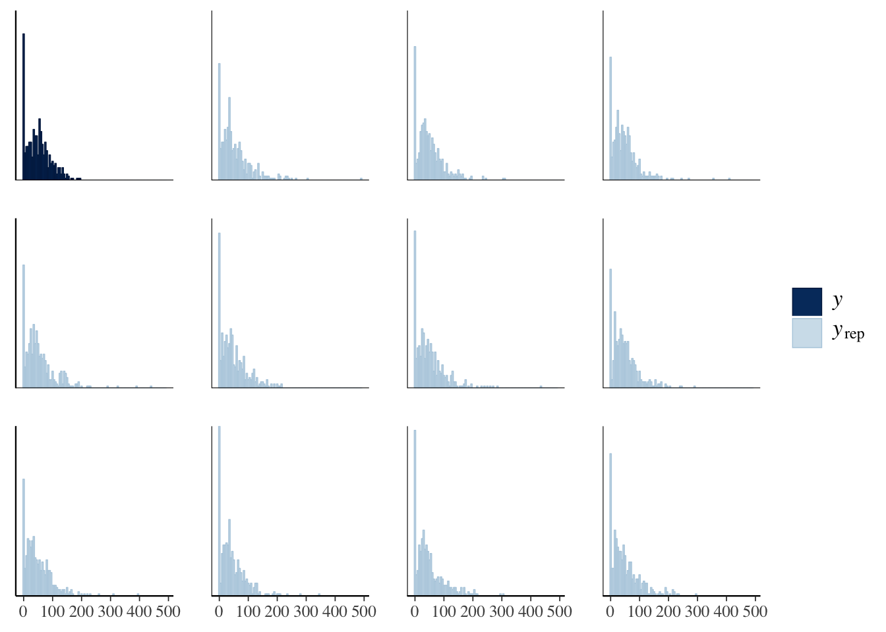
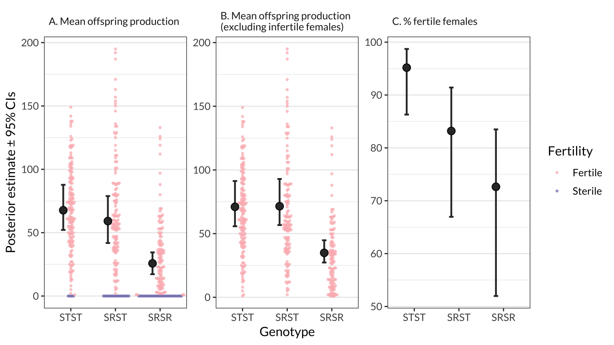
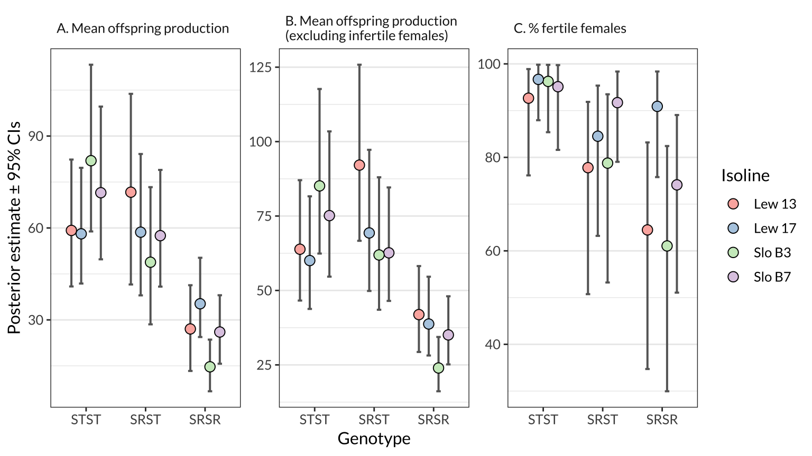

Last updated: 2019-06-28
Checks: 6 0
Knit directory: cost_of_SR_Dpseudo/
This reproducible R Markdown analysis was created with workflowr (version 1.3.0). The Checks tab describes the reproducibility checks that were applied when the results were created. The Past versions tab lists the development history.
Great! Since the R Markdown file has been committed to the Git repository, you know the exact version of the code that produced these results.
Great job! The global environment was empty. Objects defined in the global environment can affect the analysis in your R Markdown file in unknown ways. For reproduciblity it’s best to always run the code in an empty environment.
The command set.seed(20190319) was run prior to running the code in the R Markdown file. Setting a seed ensures that any results that rely on randomness, e.g. subsampling or permutations, are reproducible.
Great job! Recording the operating system, R version, and package versions is critical for reproducibility.
Nice! There were no cached chunks for this analysis, so you can be confident that you successfully produced the results during this run.
Great! You are using Git for version control. Tracking code development and connecting the code version to the results is critical for reproducibility. The version displayed above was the version of the Git repository at the time these results were generated.
Note that you need to be careful to ensure that all relevant files for the analysis have been committed to Git prior to generating the results (you can use wflow_publish or wflow_git_commit). workflowr only checks the R Markdown file, but you know if there are other scripts or data files that it depends on. Below is the status of the Git repository when the results were generated:
Ignored files:
Ignored: .DS_Store
Ignored: .Rhistory
Ignored: .Rproj.user/
Note that any generated files, e.g. HTML, png, CSS, etc., are not included in this status report because it is ok for generated content to have uncommitted changes.
These are the previous versions of the R Markdown and HTML files. If you’ve configured a remote Git repository (see ?wflow_git_remote), click on the hyperlinks in the table below to view them.
| File | Version | Author | Date | Message |
|---|---|---|---|---|
| Rmd | fc7812e | lukeholman | 2019-06-28 | First complete commit |
| html | 93aec6e | lukeholman | 2019-06-28 | Build site. |
| Rmd | 01d7dbb | lukeholman | 2019-06-28 | First complete commit |
| html | 8c6e0c3 | lukeholman | 2019-06-28 | Build site. |
| Rmd | ffdc5d4 | lukeholman | 2019-06-28 | First complete commit |
| html | ffdc5d4 | lukeholman | 2019-06-28 | First complete commit |
library(tidyverse)
library(brms)
library(bayestestR)
library(kableExtra)
library(ggbeeswarm)
library(RColorBrewer)
library(showtext)
font_add_google(name = "Lato", family = "Lato", regular.wt = 400, bold.wt = 700)
showtext_auto()
options(stringsAsFactors = FALSE)
SE <- function(x) sd(x) / sqrt(length(x))fitness_data <- read_csv("data/SR_fitness_data.csv") %>%
filter(!is.na(genotype)) %>%
rename(body_size = `Body size`,
female_age = `F age`) %>%
mutate(genotype = factor(genotype, levels = c("STST", "SRST", "SRSR")))Here, we calculate the mean offspring produced by females from each of the three genotypes (STST, SRST, and SRSR), either within each isoline or across all the isolines. We also calculate the % females that failed to produce any offspring, and provide sample size information.
means_by_isoline <- fitness_data %>%
group_by(genotype, Isoline) %>%
summarise(
Number_of_females_measured = n(),
Mean_offspring_per_female = mean(offspring),
SE = SE(offspring),
n_females_producing_offspring = sum(offspring != 0),
Percent_females_producing_offspring = 100 * n_females_producing_offspring / n())
means <- fitness_data %>%
mutate(Isoline = "Across all isolines") %>%
group_by(genotype, Isoline) %>%
summarise(
Number_of_females_measured = n(),
Mean_offspring_per_female = mean(offspring),
SE = SE(offspring),
n_females_producing_offspring = sum(offspring != 0),
Percent_females_producing_offspring = 100 * n_females_producing_offspring / n())
bind_rows(means_by_isoline, means) %>%
rename_all(function(x) gsub("_", " ", x)) %>%
rename_all(function(x) gsub("Percent", "%", x)) %>%
rename(Genotype = genotype) %>%
kable(digits = 2) %>% kable_styling()| Genotype | Isoline | Number of females measured | Mean offspring per female | SE | n females producing offspring | % females producing offspring |
|---|---|---|---|---|---|---|
| STST | Lew 13 | 37 | 57.81 | 6.46 | 35 | 94.59 |
| STST | Lew 17 | 40 | 56.85 | 5.04 | 39 | 97.50 |
| STST | Slo B3 | 40 | 76.67 | 5.59 | 39 | 97.50 |
| STST | Slo B7 | 35 | 71.14 | 4.71 | 34 | 97.14 |
| SRST | Lew 13 | 39 | 72.82 | 8.70 | 32 | 82.05 |
| SRST | Lew 17 | 37 | 56.24 | 8.11 | 32 | 86.49 |
| SRST | Slo B3 | 31 | 49.10 | 5.20 | 26 | 83.87 |
| SRST | Slo B7 | 39 | 55.26 | 7.07 | 36 | 92.31 |
| SRSR | Lew 13 | 36 | 28.58 | 5.92 | 25 | 69.44 |
| SRSR | Lew 17 | 37 | 32.19 | 3.91 | 34 | 91.89 |
| SRSR | Slo B3 | 31 | 17.19 | 4.56 | 22 | 70.97 |
| SRSR | Slo B7 | 38 | 25.50 | 4.76 | 28 | 73.68 |
| STST | Across all isolines | 152 | 65.59 | 2.81 | 147 | 96.71 |
| SRST | Across all isolines | 146 | 58.89 | 3.83 | 126 | 86.30 |
| SRSR | Across all isolines | 142 | 26.21 | 2.45 | 109 | 76.76 |
The model assumes that the response variable, offspring number, is the result of a ‘hurdle’ process. Essentially this means that the model consists of two sub-models: one controlling the probability that offspring number is non-zero, and one controlling the number of offspring produced provided that more than zero are produced (we assume that offspring number follows a negative binomial distribution, because this improved model fit relative to the simpler hurdle-Poisson model).
We assume that the parameters controlling both the hurdle and the distribution of non-zero values are affected by four fixed effects (the female’s genotype: STST, SRST, or SRSR), her isoline, the female’s age, and the interaction between genotype and isoline. We also fit two random effects: isoline, and experimental block. All fixed effects were assumed to have a prior distribution following a normal distribution with mean 0 and SD = 5.
if(!file.exists("output/brms_model.rds")){
# The hurdle and the mean have the same set of predictors
model_formula <- bf(
offspring ~ genotype * Isoline + female_age + (1 | Block),
hu ~ genotype * Isoline + female_age + (1 | Block)
)
model_prior <- c(set_prior("normal(0, 5)", class = "b"),
set_prior("normal(0, 5)", class = "b", dpar = "hu"))
model <- brm(model_formula,
family = "hurdle_negbinomial",
chains = 4, cores = 1, iter = 4000, inits = 0, seed = 12345,
control = list(adapt_delta = 0.999, max_treedepth = 15),
prior = model_prior,
data = fitness_data)
saveRDS(model, file = "output/brms_model.rds")
} else model <- readRDS("output/brms_model.rds")The idea behind posterior predictive checking is that if our model is a good fit, then we should be able to use it to generate data that looks a lot like the data we observed. Here, we see 10 draws from the ‘posterior predictive distribution’ (thin lines), which indeed look quite similar to the distribution of the real data (thick line), suggested that our model approximates the processes that generated the real data well enough for reliable inference.
pp_check(model, type = "dens_overlay")Using 10 posterior samples for ppc type 'dens_overlay' by default.
| Version | Author | Date |
|---|---|---|
| ffdc5d4 | lukeholman | 2019-06-28 |
bayesian_p_values <- as.data.frame(p_direction(model)) %>%
mutate(pd = (100 - pd) / 100,
Parameter = gsub("[.]", ":", gsub("b_", "", Parameter)))
random <- as.data.frame(summary(model)$random[[1]]) %>%
rownames_to_column("Parameter") %>%
mutate(p = NA,
Parameter = c("sd(Block - Intercept)", "sd(Block - Hurdle intercept)"))
summary(model)$fixed %>% as.data.frame() %>%
rownames_to_column("Parameter") %>%
left_join(bayesian_p_values, by = "Parameter") %>%
rename(p = pd) %>% arrange(grepl("hu_", Parameter)) %>%
rbind(random) %>%
mutate(Parameter = gsub("hu_", "Hurdle - ", Parameter),
Estimate = format(round(Estimate, 3), nsmall = 3),
Est.Error = format(round(Est.Error, 3), nsmall = 3),
` ` = ifelse(p < 0.05, "*", ""),
` ` = replace(` `, is.na(` `), ""),
p = format(round(p, 4), nsmall = 4),
Rhat = format(round(Rhat, 3), nsmall = 3),
`l-95% CI` = format(round(`l-95% CI`, 3), nsmall = 3),
`u-95% CI` = format(round(`u-95% CI`, 3), nsmall = 3),
Eff.Sample = round(Eff.Sample, 0)
) %>%
kable() %>% kable_styling()| Parameter | Estimate | Est.Error | l-95% CI | u-95% CI | Eff.Sample | Rhat | p | |
|---|---|---|---|---|---|---|---|---|
| Intercept | 4.049 | 0.269 | 3.520 | 4.585 | 6153 | 1.000 | 0.0000 |
|
| genotypeSRST | 0.366 | 0.169 | 0.029 | 0.698 | 3221 | 1.001 | 0.0166 |
|
| genotypeSRSR | -0.423 | 0.186 | -0.790 | -0.065 | 3580 | 1.001 | 0.0111 |
|
| IsolineLew17 | -0.061 | 0.164 | -0.378 | 0.261 | 4053 | 1.000 | 0.3622 | |
| IsolineSloB3 | 0.287 | 0.167 | -0.048 | 0.612 | 3999 | 1.000 | 0.0424 |
|
| IsolineSloB7 | 0.163 | 0.171 | -0.170 | 0.496 | 3623 | 1.000 | 0.1717 | |
| female_age | 0.023 | 0.058 | -0.091 | 0.138 | 9705 | 1.000 | 0.3435 | |
| genotypeSRST:IsolineLew17 | -0.225 | 0.242 | -0.690 | 0.261 | 3965 | 1.000 | 0.1704 | |
| genotypeSRSR:IsolineLew17 | -0.017 | 0.255 | -0.513 | 0.488 | 4135 | 1.001 | 0.4712 | |
| genotypeSRST:IsolineSloB3 | -0.687 | 0.253 | -1.187 | -0.191 | 4235 | 1.000 | 0.0045 |
|
| genotypeSRSR:IsolineSloB3 | -0.849 | 0.268 | -1.361 | -0.314 | 4732 | 1.001 | 0.0009 |
|
| genotypeSRST:IsolineSloB7 | -0.547 | 0.240 | -1.015 | -0.069 | 3817 | 1.000 | 0.0115 |
|
| genotypeSRSR:IsolineSloB7 | -0.340 | 0.263 | -0.854 | 0.176 | 4039 | 1.001 | 0.0988 | |
| Hurdle - Intercept | -1.498 | 1.190 | -3.834 | 0.816 | 5225 | 1.000 | 0.1005 | |
| Hurdle - genotypeSRST | 1.473 | 0.799 | 0.003 | 3.142 | 3454 | 1.000 | 0.0250 |
|
| Hurdle - genotypeSRSR | 2.186 | 0.789 | 0.750 | 3.854 | 3472 | 1.000 | 0.0009 |
|
| Hurdle - IsolineLew17 | -1.045 | 1.206 | -3.607 | 1.140 | 3525 | 1.000 | 0.1933 | |
| Hurdle - IsolineSloB3 | -0.925 | 1.195 | -3.408 | 1.287 | 2814 | 1.000 | 0.2150 | |
| Hurdle - IsolineSloB7 | -0.666 | 1.197 | -3.150 | 1.504 | 3975 | 1.000 | 0.3049 | |
| Hurdle - female_age | -0.327 | 0.237 | -0.796 | 0.131 | 10966 | 1.000 | 0.0831 | |
| Hurdle - genotypeSRST:IsolineLew17 | 0.564 | 1.344 | -1.982 | 3.384 | 3611 | 1.000 | 0.3439 | |
| Hurdle - genotypeSRSR:IsolineLew17 | -0.833 | 1.399 | -3.483 | 2.078 | 3812 | 1.000 | 0.2704 | |
| Hurdle - genotypeSRST:IsolineSloB3 | 0.851 | 1.343 | -1.656 | 3.658 | 3169 | 1.000 | 0.2689 | |
| Hurdle - genotypeSRSR:IsolineSloB3 | 1.078 | 1.307 | -1.358 | 3.753 | 2985 | 1.000 | 0.2051 | |
| Hurdle - genotypeSRST:IsolineSloB7 | -0.590 | 1.402 | -3.270 | 2.293 | 4095 | 1.000 | 0.3333 | |
| Hurdle - genotypeSRSR:IsolineSloB7 | 0.186 | 1.291 | -2.219 | 2.827 | 3847 | 1.000 | 0.4508 | |
| sd(Block - Intercept) | 0.180 | 0.159 | 0.011 | 0.568 | 2097 | 1.000 | NA | |
| sd(Block - Hurdle intercept) | 0.572 | 0.518 | 0.023 | 1.948 | 2326 | 1.001 | NA |
new <- fitness_data %>% select(genotype, Isoline, body_size, female_age) %>%
mutate(body_size = mean(body_size, na.rm = TRUE),
female_age = mean(female_age)) %>%
distinct()
predicted_mean <- data.frame(new, fitted(model, newdata = new, re_formula = NA)) %>%
mutate(facet = "A. Mean offspring production")
predicted_mean_when_fertile <- data.frame(new, fitted(model, newdata = new, dpar = "mu", re_formula = NA)) %>%
mutate(facet = "B. Mean offspring production\n(excluding infertile females)")
predicted_prop_infertile <- data.frame(new, fitted(model, newdata = new, dpar = "hu", re_formula = NA)) %>%
mutate(facet = "C. % fertile females",
Estimate = 100 * (1 - Estimate), Q2.5 = (1 - Q2.5) * 100, Q97.5 = (1 - Q97.5) * 100)
posterior_means <-
data.frame(new, as.data.frame(t(fitted(model, newdata = new, re_formula = NA, summary = FALSE)))) %>%
select(-body_size, -female_age, -Isoline) %>%
group_by(genotype) %>%
summarise_all(mean) %>% select(-genotype) %>% t() %>% as.data.frame() %>%
rename(STST = V1, SRST = V2, SRSR = V3)
predicted_mean_all_iso <- data.frame(
genotype = c("STST", "SRST", "SRSR"), Isoline = "All",
posterior_means %>% lapply(posterior_summary) %>% do.call("rbind", .),
facet = "A. Mean offspring production")
posterior_means_when_fertile <-
data.frame(new, as.data.frame(t(fitted(model, newdata = new, dpar = "mu", re_formula = NA, summary = FALSE)))) %>%
select(-body_size, -female_age, -Isoline) %>%
group_by(genotype) %>%
summarise_all(mean) %>% select(-genotype) %>% t() %>% as.data.frame() %>%
rename(STST = V1, SRST = V2, SRSR = V3)
predicted_mean_when_fertile_all_iso <- data.frame(
genotype = c("STST", "SRST", "SRSR"), Isoline = "All",
posterior_means_when_fertile %>% lapply(posterior_summary) %>% do.call("rbind", .),
facet = "B. Mean offspring production\n(excluding infertile females)")
posterior_means_prop_infertile <-
data.frame(new, as.data.frame(t(fitted(model, newdata = new, dpar = "hu", re_formula = NA, summary = FALSE)))) %>%
select(-body_size, -female_age, -Isoline) %>%
group_by(genotype) %>%
summarise_all(~ 100 * mean(.x)) %>% select(-genotype) %>% t() %>% as.data.frame() %>%
rename(STST = V1, SRST = V2, SRSR = V3)
predicted_prop_infertile_all_iso <- data.frame(
genotype = c("STST", "SRST", "SRSR"), Isoline = "All",
posterior_means_prop_infertile %>% lapply(posterior_summary) %>% do.call("rbind", .),
facet = "C. % fertile females")
preds_figure1 <- bind_rows(predicted_mean_all_iso,
predicted_mean_when_fertile_all_iso,
predicted_prop_infertile_all_iso) %>%
mutate(genotype = factor(genotype, levels = c("STST", "SRST", "SRSR")))
preds_figure2 <- bind_rows(predicted_mean,
predicted_mean_when_fertile,
predicted_prop_infertile) %>%
mutate(facet = factor(facet, levels = unique(facet)),
genotype = factor(genotype, levels = c("STST", "SRST", "SRSR"))) %>%
select(-body_size, -female_age)
beeswarm_points <- bind_rows(
fitness_data %>% mutate(facet = "A. Mean offspring production"),
fitness_data %>% filter(offspring != 0) %>% mutate(facet = "B. Mean offspring production\n(excluding infertile females)")) %>%
mutate(Fertility = ifelse(offspring == 0, "Sterile", "Fertile"),
genotype = factor(genotype, levels = c("STST", "SRST", "SRSR"))) %>%
rename(Estimate = offspring)
pos1 <- position_nudge(x = -0.17)
pal <- c(brewer.pal(4, "RdPu")[2], brewer.pal(7, "Purples")[5])
figure_1 <- preds_figure1 %>%
ggplot(aes(genotype, Estimate)) +
geom_errorbar(aes(ymin = Q2.5, ymax = Q97.5), colour = "grey20", position = pos1, size = .8, width = 0.1) +
geom_beeswarm(data = beeswarm_points, aes(colour = Fertility),
size = .7, alpha = 0.6) +
geom_point(size = 3.1, pch = 21, colour = "black", position = pos1, fill = "grey20") +
scale_colour_manual(values = pal) +
facet_wrap(~facet, scale = "free_y") +
labs(y = "Posterior estimate \u00B1 95% CIs", x = "Genotype") +
theme_bw() +
theme(strip.background = element_blank(),
text = element_text(family = "Lato", size = 12),
panel.grid.major.x = element_blank(),
strip.text = element_text(hjust = 0))
dodge <- position_dodge(0.66)
figure_2 <- preds_figure2 %>%
ggplot(aes(genotype, Estimate, fill = Isoline)) +
geom_errorbar(aes(ymin = Q2.5, ymax = Q97.5), size = .7, width = 0.3, colour = "grey40", position = dodge) +
geom_point(size = 3.1, pch = 21, colour = "black", position = dodge) +
facet_wrap(~facet, scale = "free_y") +
scale_fill_brewer(palette = "Pastel1") +
labs(y = "Posterior estimate \u00B1 95% CIs", x = "Genotype") +
theme_bw() +
theme(strip.background = element_blank(),
text = element_text(family = "Lato", size = 12),
panel.grid.major.x = element_blank(),
strip.text = element_text(hjust = 0))
figure_1 %>% ggsave(filename = "figures/figure_1.pdf", width = 9, height = 4)
figure_2 %>% ggsave(filename = "figures/figure_2.pdf", width = 9, height = 4)figure_1
| Version | Author | Date |
|---|---|---|
| ffdc5d4 | lukeholman | 2019-06-28 |
figure_2
| Version | Author | Date |
|---|---|---|
| ffdc5d4 | lukeholman | 2019-06-28 |
compare_means <- function(mean1, mean2, posterior){
difference <- posterior[, mean2] - posterior[, mean1]
relative <- median(posterior[, mean2] / posterior[, mean1])
p_value <- as.numeric(p_direction(difference)) / 100
as_tibble(posterior_summary(as.mcmc(difference))) %>%
mutate(Comparison = paste(mean1, mean2, sep = " \u2192 "),
`% difference` = format(round(100 * relative, 1), nsmall = 1),
`95% CIs` = paste(" (", format(round(Q2.5, 1), nsmall = 1), " to ", format(round(Q97.5, 1), nsmall = 1), "%)", sep = ""),
`Difference in means` = paste(format(round(Estimate, 2), nsmall = 2), `95% CIs`, sep = ""),
`Fitness trait` = NA,
p = p_value) %>%
select( -Q2.5, -Q97.5) %>%
select(Comparison, `Fitness trait`, `Difference in means`, Est.Error, `% difference`, p)
}
table_of_contrasts <- bind_rows(
compare_means("STST", "SRST", posterior_means),
compare_means("STST", "SRSR", posterior_means),
compare_means("SRST", "SRSR", posterior_means),
compare_means("STST", "SRST", posterior_means_when_fertile),
compare_means("STST", "SRSR", posterior_means_when_fertile),
compare_means("SRST", "SRSR", posterior_means_when_fertile),
compare_means("STST", "SRST", posterior_means_prop_infertile),
compare_means("STST", "SRSR", posterior_means_prop_infertile),
compare_means("SRST", "SRSR", posterior_means_prop_infertile)
) %>% mutate(`Fitness trait` = rep(c("Mean offspring production",
"Mean offspring production (excluding infertile females)",
"% fertile females"), each = 3)) %>%
mutate(Est.Error = format(round(Est.Error, 2), nsmall = 2),
` ` = ifelse(p < 0.05, "*", " "),
p = format(round(p, 4), nsmall = 4))
table_of_contrasts %>%
kable() %>% kable_styling()| Comparison | Fitness trait | Difference in means | Est.Error | % difference | p | |
|---|---|---|---|---|---|---|
| STST → SRST | Mean offspring production | -8.53 (-23.1 to 4.7%) | 6.98 | 87.7 | 0.8986 | |
| STST → SRSR | Mean offspring production | -41.92 (-57.2 to -29.5%) | 7.27 | 38.3 | 1.0000 | |
| SRST → SRSR | Mean offspring production | -33.39 (-47.6 to -21.5%) | 6.78 | 43.6 | 1.0000 | |
| STST → SRST | Mean offspring production (excluding infertile females) | 0.46 (-12.5 to 13.5%) | 6.55 | 100.6 | 0.5270 | |
| STST → SRSR | Mean offspring production (excluding infertile females) | -36.12 (-50.5 to -24.5%) | 6.85 | 49.1 | 1.0000 | |
| SRST → SRSR | Mean offspring production (excluding infertile females) | -36.58 (-51.4 to -24.9%) | 6.90 | 48.8 | 1.0000 | |
| STST → SRST | % fertile females | 11.98 (4.0 to 23.6%) | 5.04 | 383.7 | 0.9985 | |
| STST → SRSR | % fertile females | 22.54 (12.3 to 37.8%) | 6.29 | 637.5 | 1.0000 | |
| SRST → SRSR | % fertile females | 10.56 (0.4 to 21.8%) | 5.40 | 165.6 | 0.9796 |
sessionInfo()R version 3.5.1 (2018-07-02)
Platform: x86_64-apple-darwin15.6.0 (64-bit)
Running under: macOS High Sierra 10.13.6
Matrix products: default
BLAS: /Library/Frameworks/R.framework/Versions/3.5/Resources/lib/libRblas.0.dylib
LAPACK: /Library/Frameworks/R.framework/Versions/3.5/Resources/lib/libRlapack.dylib
locale:
[1] en_AU.UTF-8/en_AU.UTF-8/en_AU.UTF-8/C/en_AU.UTF-8/en_AU.UTF-8
attached base packages:
[1] stats graphics grDevices utils datasets methods base
other attached packages:
[1] showtext_0.5-1 showtextdb_2.0 sysfonts_0.7.2
[4] RColorBrewer_1.1-2 ggbeeswarm_0.6.0 kableExtra_0.9.0
[7] bayestestR_0.2.2 brms_2.8.0 Rcpp_1.0.1
[10] forcats_0.4.0 stringr_1.4.0 dplyr_0.8.0.1
[13] purrr_0.3.2 readr_1.1.1 tidyr_0.8.2
[16] tibble_2.0.99.9000 ggplot2_3.1.0 tidyverse_1.2.1
loaded via a namespace (and not attached):
[1] colorspace_1.3-2 ggridges_0.5.0 rsconnect_0.8.8
[4] rprojroot_1.3-2 markdown_0.9 base64enc_0.1-3
[7] fs_1.3.1 rstudioapi_0.10 rstan_2.18.2
[10] DT_0.4 mvtnorm_1.0-8 lubridate_1.7.4
[13] xml2_1.2.0 bridgesampling_0.4-0 knitr_1.22
[16] shinythemes_1.1.1 bayesplot_1.6.0 jsonlite_1.6
[19] workflowr_1.3.0 broom_0.5.0 shiny_1.3.2
[22] compiler_3.5.1 httr_1.4.0 backports_1.1.2
[25] assertthat_0.2.1 Matrix_1.2-14 lazyeval_0.2.2
[28] cli_1.1.0 later_0.8.0 htmltools_0.3.6
[31] prettyunits_1.0.2 tools_3.5.1 igraph_1.2.1
[34] coda_0.19-2 gtable_0.2.0 glue_1.3.1.9000
[37] reshape2_1.4.3 cellranger_1.1.0 nlme_3.1-137
[40] crosstalk_1.0.0 insight_0.3.0 xfun_0.6
[43] ps_1.3.0 rvest_0.3.2 mime_0.6
[46] miniUI_0.1.1.1 gtools_3.8.1 zoo_1.8-3
[49] scales_1.0.0 colourpicker_1.0 hms_0.4.2
[52] promises_1.0.1 Brobdingnag_1.2-5 parallel_3.5.1
[55] inline_0.3.15 shinystan_2.5.0 curl_3.3
[58] yaml_2.2.0 gridExtra_2.3 loo_2.1.0
[61] StanHeaders_2.18.0 stringi_1.4.3 highr_0.8
[64] dygraphs_1.1.1.6 pkgbuild_1.0.2 rlang_0.3.4
[67] pkgconfig_2.0.2 matrixStats_0.54.0 evaluate_0.13
[70] lattice_0.20-35 labeling_0.3 rstantools_1.5.0
[73] htmlwidgets_1.2 tidyselect_0.2.5 processx_3.2.1
[76] plyr_1.8.4 magrittr_1.5 R6_2.4.0
[79] pillar_1.3.1.9000 haven_1.1.2 whisker_0.3-2
[82] withr_2.1.2 xts_0.11-0 abind_1.4-5
[85] modelr_0.1.2 crayon_1.3.4 rmarkdown_1.10
[88] grid_3.5.1 readxl_1.1.0 callr_2.0.4
[91] git2r_0.23.0 threejs_0.3.1 digest_0.6.18
[94] xtable_1.8-4 httpuv_1.5.1 stats4_3.5.1
[97] munsell_0.5.0 beeswarm_0.2.3 viridisLite_0.3.0
[100] vipor_0.4.5 shinyjs_1.0